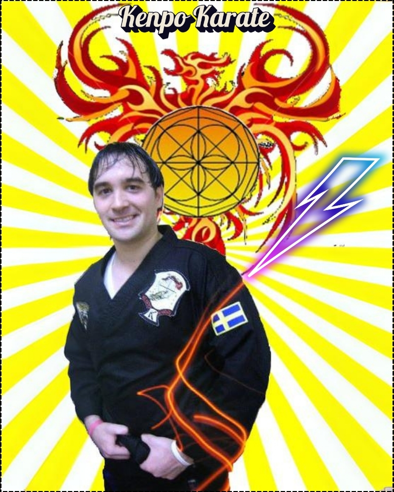
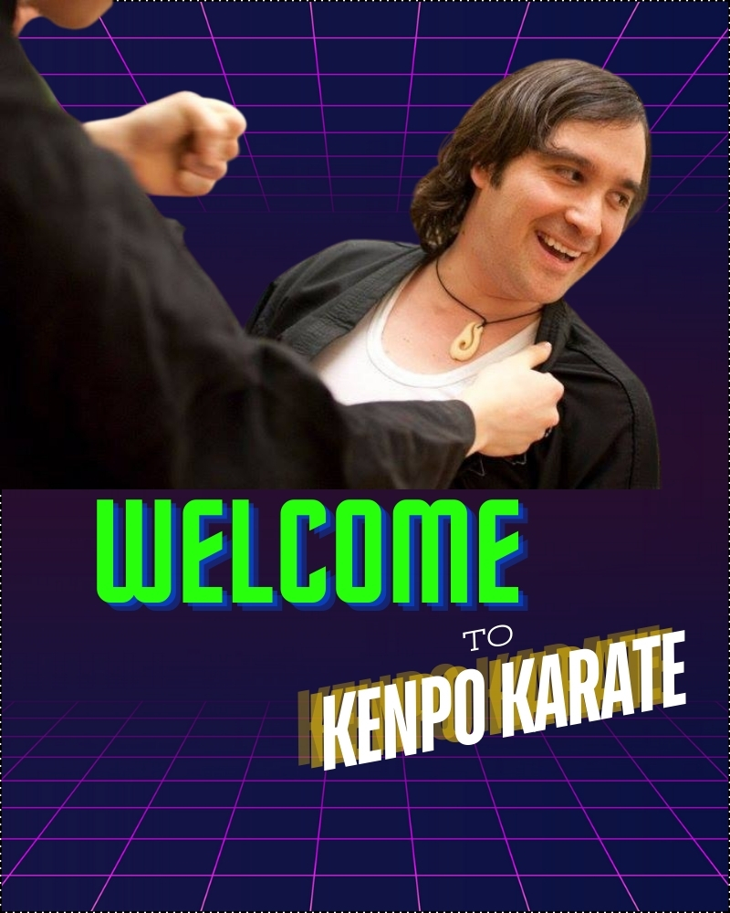
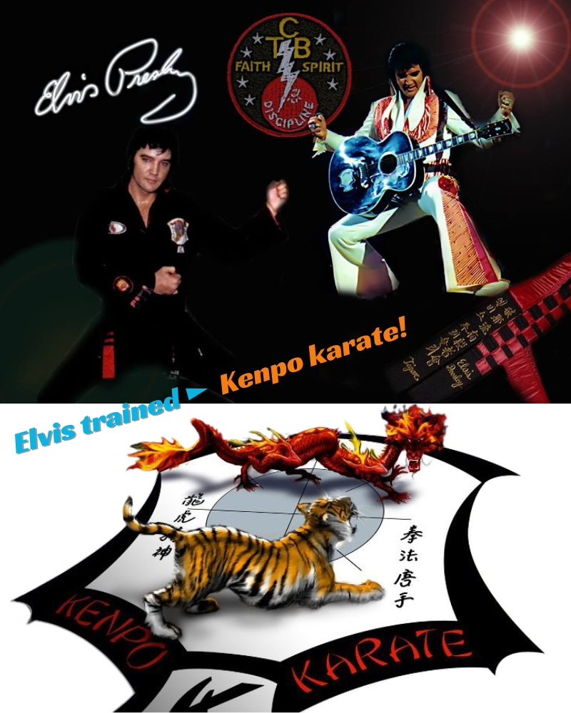
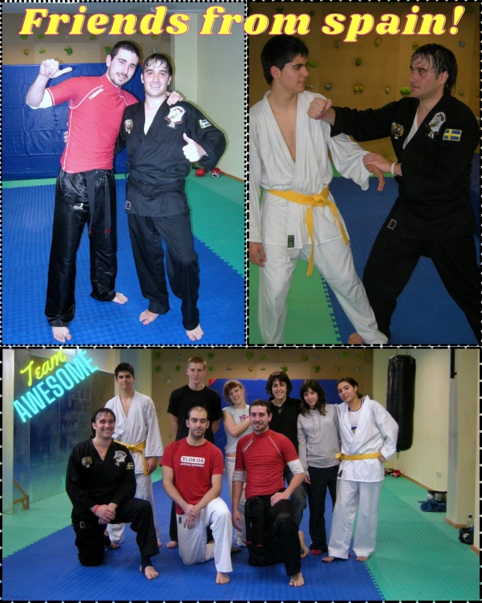
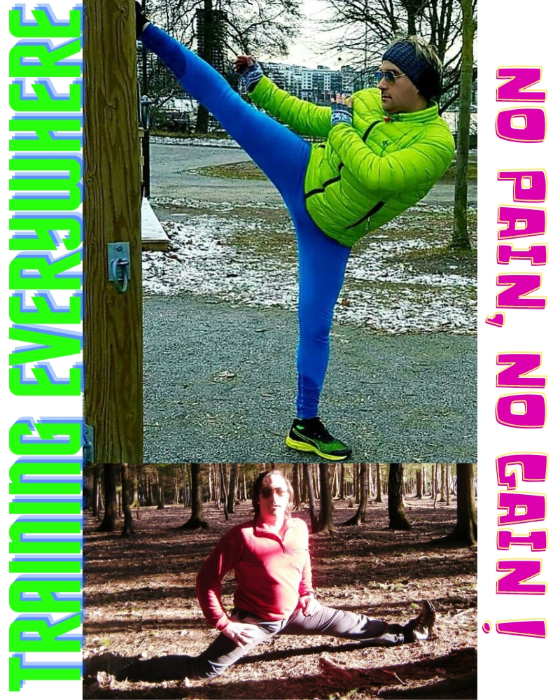
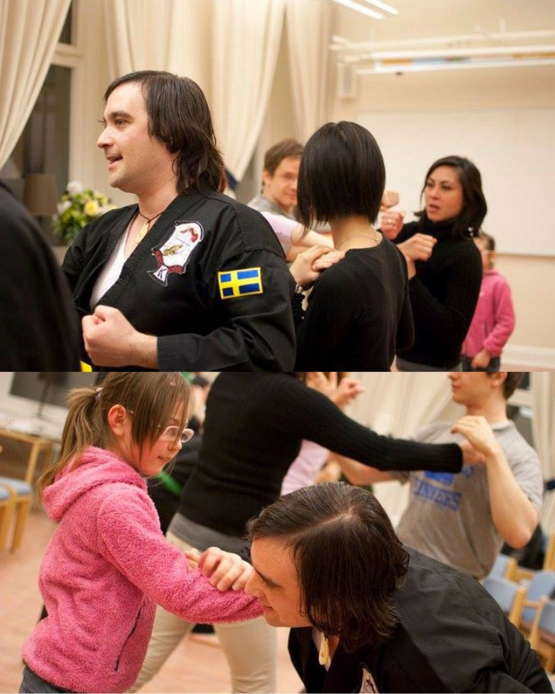
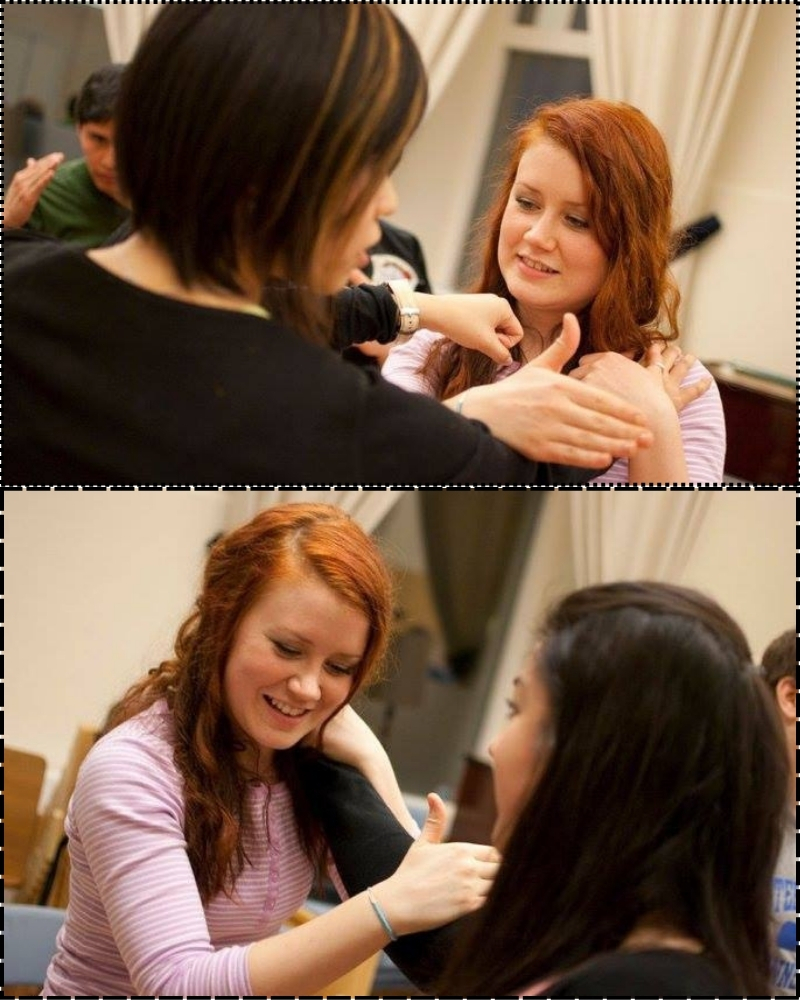
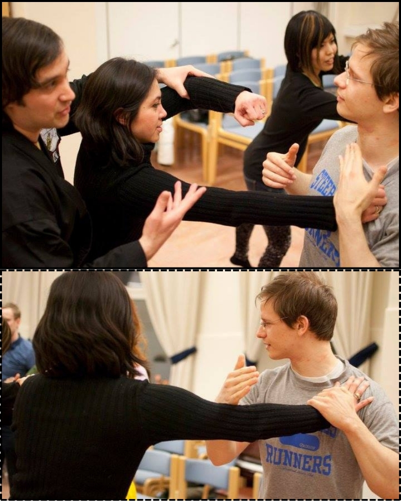
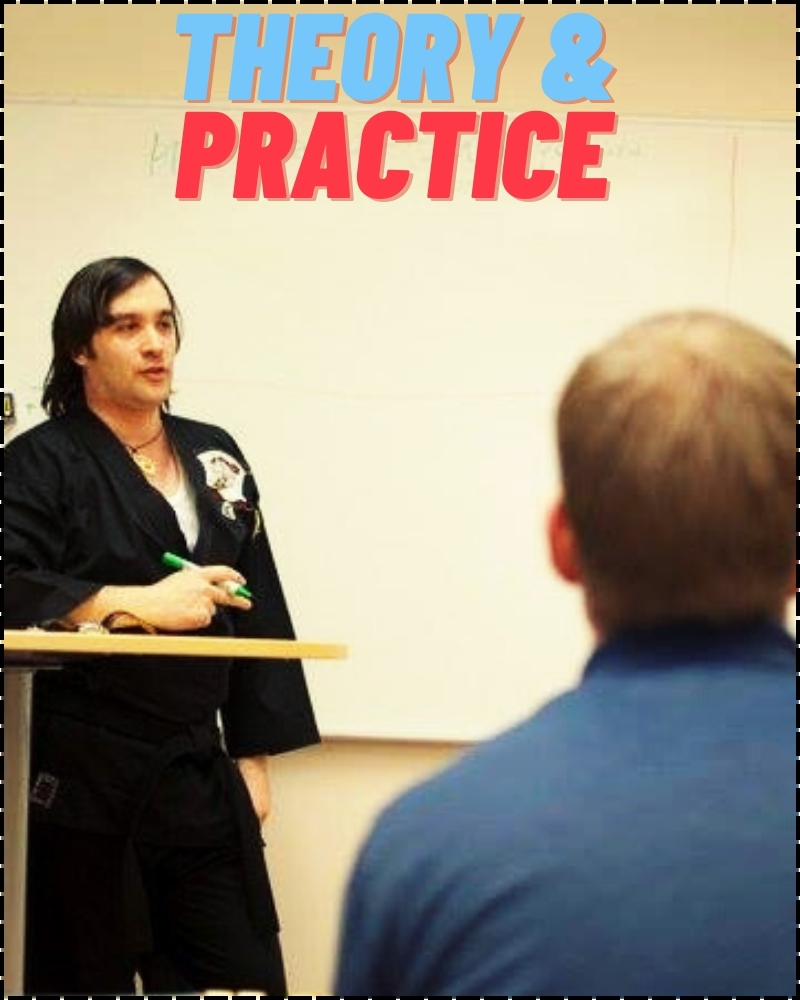

At Kenpo Karate, we teach from young children to adults, providing comprehensive training that covers mental, spiritual, and physiological attributes.
Our holistic approach ensures that individuals improve in all areas of their lives throughout the art of Kenpo Karate and our paradigm about holistic training means for us mental, spiritual and physiological improving.
Because of that, you will not only learn how to defend yourself, but how to find the self-control, self-steem, respect for yourself and all living creatures, to live in balance with everything.
Our instructors are highly trained and experienced in delivering tailored programs that cater to the unique needs of each student. Also, We believe in fostering a positive and inclusive environment where everyone can grow and succeed.
Kenpo Karate is more than just a martial art; as explain a bit above, it's a way of life, because once you learn to control yourself, to love yourself and respect others, your life start changing positively, in that way we are promoting discipline, respect, and perseverance. Our outermost goal is to develop well-rounded individuals who are confident, focused, and capable of achieving their goals.
Because of all the mentioned above, we believe that Kenpo Karate is a life's style, a discipline a life's commitment to do our best with all living creatures and with ourselves.
Our philosophy is based upon the respect to all living creatures, we seek to avoid all confrontations possibles and in return we build strong and self-confident martial art personalities, because If students build a stronger self-steem no matter what other say or other's provocations, they will keep calm, because we are not afraid of other's but we are afraid of what damage we could cause, and that is why we have a huge responsability upon
Because of all that and much more not mentioned in here, we can assure you that you will see the benefits of training with us in the very first month.
My career in the martial arts started at the age of 1 year old, yes, you got It right! When I was 1 year old my father whom was the teacher of my mother set me my first Kung-fu suit with the white belt on
When I was 3 years old I performed the first national exhibition with my father in a TV show there back in the 80's.
Afterward I continue practicing many different martial art styles, like Taekwon-do, Karate-do, Shinto Ryu, Kempo, and kenpo karate where I continue practicing It with my own developing.
Later on, I started my career as instructor when I was 16 years old, I had my first school with over 30 students.
I travelled around the world to keep learning from great martial artists and acquiring more experience, but I started sharing my knowledge so that I taught martial arts in several countries like in the USA, in Chile, Argentina, Spain, Portugal, United Kingdom, Sweden and others.
Because of that I could grow as person, martial artist and professionally. Besides, I studied several things like philosophy, psychology, medicine and more, like programming.
I participated among several tournaments where I was world champion in both kata and fighting, however, I don't limit a real success with how many world cups you win, but how much wisdom and fight you avoid in life, because a real winner is the one that could avoid a fight not involved in It.
Abiding the above paradigm, I will prepare martial artists that will conquer themselves, because real life's enemy are ourselves and not all the way around.
Today I am the Master of:
Apollon Kenpo Karate.

Our kids' classes are fun and engaging, teaching students the basics of Kenpo Karate in a safe and supportive environment. Besides, we focus on building confidence, coordination, and discipline through structured activities and games.
Because childhood is where kids start develop their personality, we can help them to built self-steem, self-confidence, strength of character and because their are in constant anabolism It will help their bones, muscles and everything else part of their growing stage.
Our adult classes cater to all levels, from beginners to advanced practitioners. So, we offer intensive training sessions that cover self-defense techniques, kata forms, and sparring. In other words, our classes are designed to improve physical fitness, mental peacefulness, and overall general well-being.
With us you will learn all the tools to defend yourself, adapt your knowledge acquired to save your both, integrity and life anytime, anywhere.
For those looking for personalized instruction, we offer private lessons that allow you to progress at your own pace. Our instructors will work closely with you to develop a training plan that meets your specific goals and needs.
We regularly host workshops and seminars on various topics, including self-defense, fitness, and mindfulness. These events are open to the public and provide an opportunity to learn from some of the best instructors in the field.
Are you ready to embark on an exciting journey of discipline, strength, and self-discovery? At the Dojo of Apollon Kenpo Karate, we are thrilled to welcome new students who are eager to learn, grow, and master the art of the inner martial art.
Whether you are a complete beginner or looking to refine your skills, our experienced instructors are here to guide you every step of the way. Join our community and experience the perfect blend of tradition and modern techniques in a supportive and inspiring environment.
Have questions or ready to take the first step? Feel free to reach out to us at:
We look forward to hearing from you and helping you kickstart your karate journey!